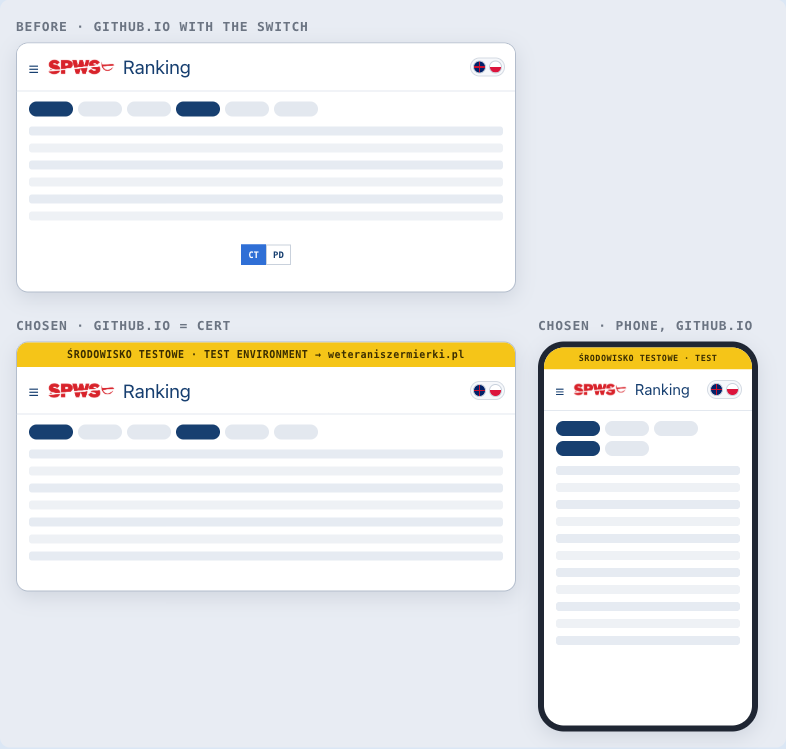

context
Context
ADR-009 served CERT and PROD from one GitHub Pages site, with a runtime CT/PD switch. release.yml injects both credential pairs into index.html (L121–124), so the switch shows on fencer4life.github.io. It injects the PROD pair only into register.html (L144–147) and into the published calculator and annex (L159–164).
ADR-090 then made weteraniszermierki.pl the public PROD surface, and the user decided on 3 October 2026 that the WordPress pages carry the ranking, the calendar, the calculator and the annex. With PROD on its own host, the switch on github.io has stopped being a convenience and become a hazard:
- an admin signed in on github.io can switch to PROD and act on it, from an address that looks like a test copy;
- the github.io calculator and annex read PROD under that same test-looking address.
One more fact shapes this decision. A release deploys GitHub Pages and CERT at the same time, and only PROD waits for the production approval. The WordPress pages load their code from Pages, so they run new code against the old PROD database until the approval. In run 36986509618 (2 October 2026) that gap was 84 seconds.
decision
Decision
- github.io is CERT. The app opens on CERT only, with no CT/PD switch. Every github.io page that runs on the CERT pair carries a yellow TEST ribbon, which stays on screen and links to
weteraniszermierki.pl.index.htmlkeeps the PROD pair only for the read-only promotion state (refreshPromotionState); it is never selectable and never written to. - weteraniszermierki.pl is PROD. Every WordPress page holds the PROD pair only, and has no ribbon and no switch.
register.htmlstays PROD on the file host, without a ribbon. Fencers already hold links to it, and ADR-079 §6 gives it exactly one environment.- The published documents are split by environment.
- The github.io copies of the calculator and the annex, at their present addresses, become CERT copies with the ribbon.
- The PROD copies that the WordPress pages frame live under
embed/on the same file host. release.ymlinjects each environment into its own files, and a build guard fails the release if anembed/copy carries CERT credentials.
- Workflow dispatches target the host's own environment: CERT from github.io, PROD from WordPress.
- The release order is kept, under a rule. One Pages site serves both environments, so Pages still deploys before the PROD approval. The rule (Q8, decided A):
- code that needs a new database object ships in the release after the one that creates it — the database first, the code that uses it next;
- PROD is approved within minutes of CERT, and never left waiting.
The chosen mocks (W3; drawn, 3 October 2026). Before: github.io with the switch. Chosen: github.io as CERT under the ribbon, on a computer and on a phone. The PL/EN switch stays in the bar (ADR-090, amendment 2026-10-03, Q2 C).

alternatives
Alternatives considered
- Keep the switch. Rejected: it lets an admin act on PROD from the test host, and it leaves public visitors on github.io reading PROD under a test-looking address.
- A second GitHub Pages site for PROD's files. Rejected for now: it needs a second repository or account, or a custom address, and a custom address needs DNS access that nobody on the project holds.
- Serve PROD's files from the WordPress hosting. Rejected: nobody on the project holds the hosting login.
- Make
deploy-pageswait fordeploy-prod. Rejected: github.io is also CERT's front end, so CERT could no longer be checked in a browser before PROD is approved.
consequences
Consequences
- ADR-009's runtime toggle is superseded. FR-42 is retired and replaced by FR-151. The single Pages site and the
sedcredential injection stand. dualEnvnow means two things. The switch is gone, but the PROD read for promotion state stays. Tests WP.ENV.01–02 pin both behaviours, and WP.REL.01 pins the per-file injection.- Old github.io calculator bookmarks now show CERT, under the ribbon. The numbers come from CERT's season settings, which are normally identical to PROD's.
- LOCAL is unchanged. The committed
index.htmlalready has an empty PROD pair, so LOCAL has no switch today. - The handbook's environments page (
doc/handbook/operations/environments-and-release.html) describes the two hosts and the Q8 rule. The release checklist in the plan's §12 carries the rule for operators.